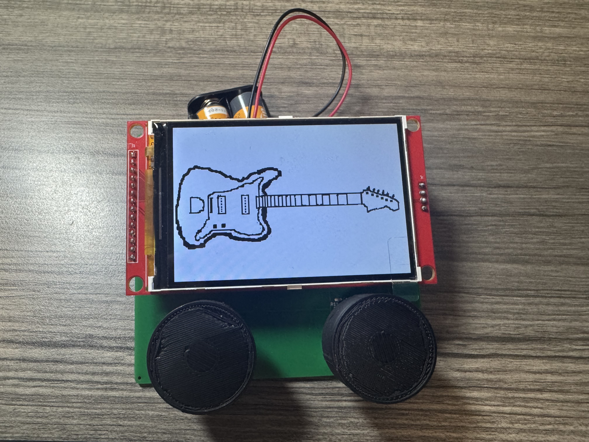
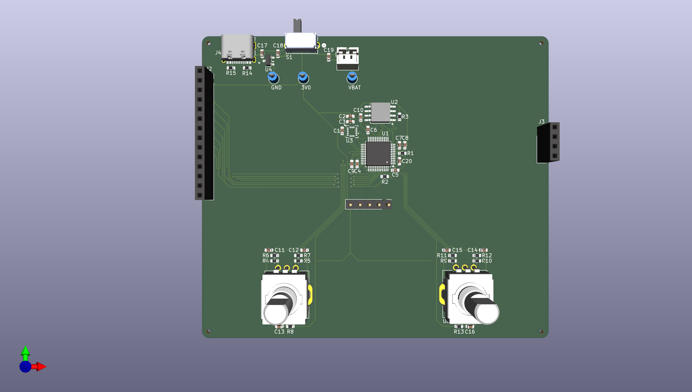
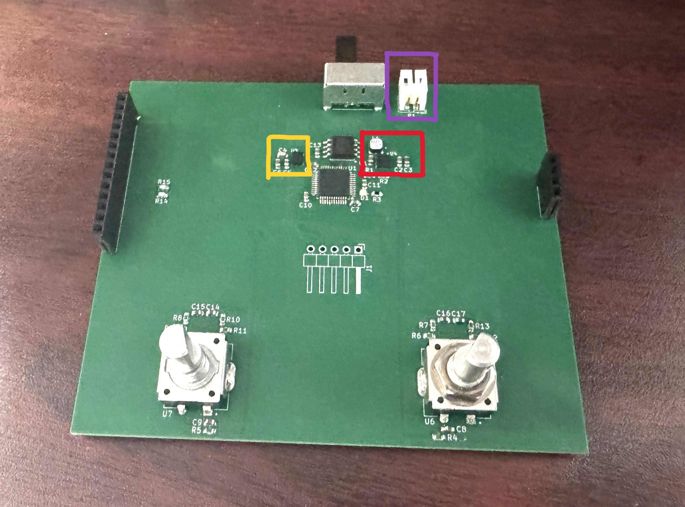
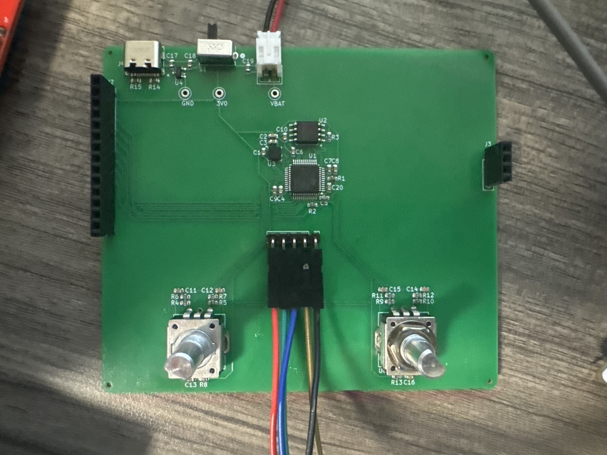

During a previous Co-op term, the company ran a small design challenge for the interns to design an electronic Etch-A-Sketch, and I decided to use this opportunity to learn PCB design. This project taught me PCB design the hard way, including an initial version which melted its own solder joints.
The Etch-A-Sketch traditionally uses a simple interface of two knobs and a “cursor” which scrapes powder off the back side of the screen to draw, and a shaking gesture to “erase” your drawing by reapplying the powder. My adaptation aims to recreate the basic elements, while taking advantage of the capabilities enabled by a digital version. This means implementation of the simple cursor controls and motion enabled erase, with some additional quality of life features.

The most evident new feature is a precise erasing mode using the cursor, rather than having to erase the entire screen. This eraser feature by design also enables the user to move the cursor without it drawing on the screen. This makes drawing significantly easier, and enables correction of small mistakes without having to restart. Other new features implemented include a configurable screen brightness, and cursor thickness selection.
Hardware architecture
The hardware architecture for this is as follows. The MCU for this is the STM32L433 which provides many helpful features. One of these is the timer quadrature input features, allowing the signal from the 2 rotary encoders to directly increment/decrement the timer capture registers without MCU involvement. These rotary encoders contain embedded push buttons to allow for system state selection. An LCD screen and accelerometer use standard SPI communication and interrupt signals. The flash memory (for future expansion) uses a QSPI interface.

Firmware development
The firmware is written in C, making use of the STM32 extension in VSCode. The STM32HAL API was used in my custom driver implementations for the components. It also incorporates an external driver for the LCD screen. The base design relies on a state machine based on the “mode” selected, and then interpreting the input capture registers as the appropriate values. Setting the max value of these registers as the screen width/height gives us individual pixel resolution control with the rotary encoders directly modifying these hardware values. The state machine makes changes by measuring the change in these counter values, and making visual modifications based on them. This only changes for the screen brightness, where the as-is register value is scaled to a TIM16 register value and used as a pwm signal. The screen clear is implemented with interrupts, where initial SPI transaction is used to set the accelerometer settings, and its movement threshold detection interrupts are used to trigger the screen clear.
This firmware was written first with an STM Nucleo board, allowing for known hardware stability and the ability to debug issues early. This allowed me to have a known working version of the code which could be loaded onto the board and used as a starting point. Due to the timelines involved, this was the version presented to the firmware team at the previous co-op, and I received useful feedback for improvements which could be made.
Hardware design
The hardware design for this project was a challenge. As this was my introduction to PCB design, I was learning to use the tools at the same time as making the design. The designs for both versions were done in KiCad, but beyond that the part selection, sourcing, and manufacturing service selection proved to be challenging in their own right. The general implementation was for a 2 x AA battery power with a boost converter circuit to get up to 3.3V, various external components (QSPI flash memory, 6-axis IMU, rotary encoders) connected to the MCU, and using the male pins built onto both sides of the LCD screen module for mounting the screen. The board is sized appropriately to be held and used independently of any external enclosures or connections, including the placement of the rotary encoders.

My first design was sent out for production, and the parts ordered for the PCB assembly. The assembly process was admittedly rough. I attempted to mount the parts with the use of a stencil and solder paste. On the second try, I was left with a board which passed rudimentary checks for continuity, resistance, etc. Upon plugging this board into power, the board immediately began to heat up, and within a few seconds the microcontroller got hot enough to melt its own solder joints. Safe to say, not good. The root cause of this was eventually discovered to be the power connector being connected in the incorrect direction, meaning that the external battery power was connected in reverse polarity.
During the hardware design for the first revision, I came at it with the full working knowledge I had, and some revelations which came only when handling the initial version. For example, the alkaline AA batteries were consistently measured to have a voltage around 3V, above the expected according to their specifications. This led to the removal of the now redundant DC-DC voltage boost circuit. Some other additions were proper pull-ups/downs for boot configuration pins, a USB-C (power only as of Rev1) port for consistency during testing, and improved routing, especially for length matching on signal paths. This time, the board was assembled using an external PCB assembly service, and has no known blocking hardware issues.

The hardware design has some known areas for improvement. For example, the mounting slots for the screen are misaligned on the right side of the board, where the pin connections for the built-in SD card slot are routed. Since the SD card is not used, the only issue this poses is a visual one, where one of the male pins from the screen is visibly unconnected to the Etch-A-Sketch board. Some other improvements are to connect USB data lines to the MCU, and reducing the number of vias for the LCD screen’s SPI lines.
Lessons learned
Overall, these are the main lessons I learned during development:
Manage the scope of the project/components
During development, many unnecessary extras were added to the project which increased development time for little advantage. The best example of this is the custom drivers for the ICM-42688 6-axis IMU (initial version) and the LIS3DTH accelerometer (first revision). These drivers were an interesting and useful learning experience, but ultimately just increased development time with no meaningful contribution to the project, given the limited scope of my usage of them.
Pay attention to the datasheet and details
Despite the unfortunate failure of the initial hardware version, it was likely doomed from the start. It did not have the proper connections to the boot configuration pins, which likely would have prevented normal operation. Other factors such as the unnecessary power boot circuit, the inverse polarity connection, and the unmatched SPI traces are oversights which in hindsight seem obvious with little precursory research, but at the time had not been obvious mistakes. These were resolved with the first revision, but hopefully similar mistakes will not be made in future projects, where I can draw on the knowledge gained here, and the research phase of hardware development to be more comprehensive.
Overall, this project served as a great introduction to PCB design. I'm particularly proud of the hardware design, since this was my first time designing a PCB from scratch, and the current board fully meets the original design specs. It's also become something fun to show off: family members who remember the original toy get a kick out of seeing this digital version in action.